Real stats page with synthetic API responses. Small rewards remain visible down to 0.00000001 BNT. Accepted work and the last submission appear above balances; verification holds remain explicit.
Reviewed captures: 2026-10-30 18:30 EDT. Source base: ee9493823c1f041301aba8483ffd483e8269acbd. Exact source hashes: revision manifest.
26 desktop (1366px) and mobile (390px) captures cover small rewards, one atomic unit, zero rewards, no shares, old shares, verification holds, quarantine, loading, balance failure, lookup failure and empty lookup. Disabled controls, dark mode, German formatting and Arabic layout are included.
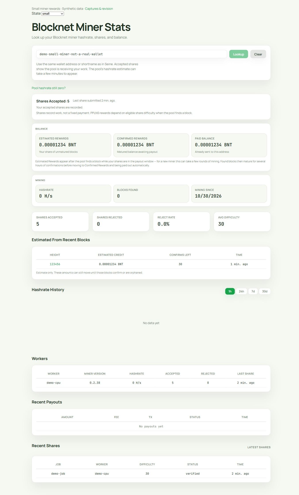
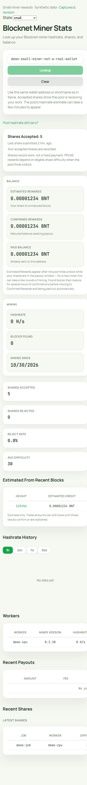
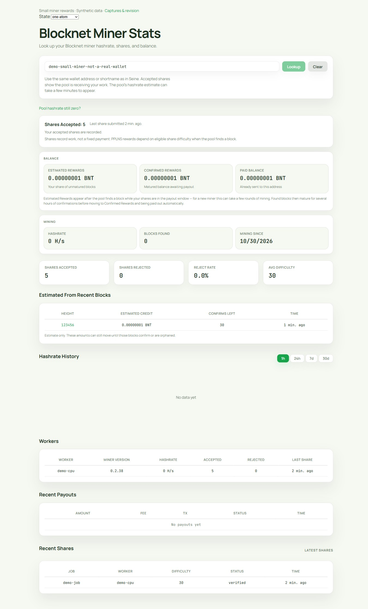
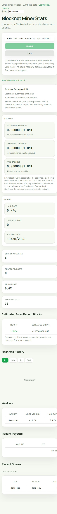
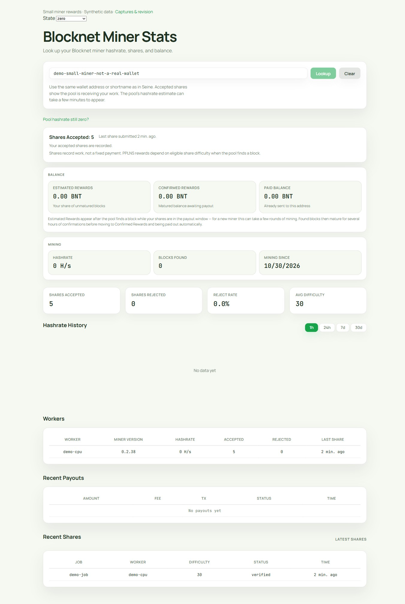
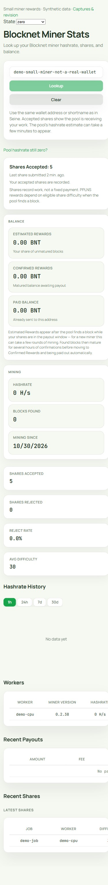
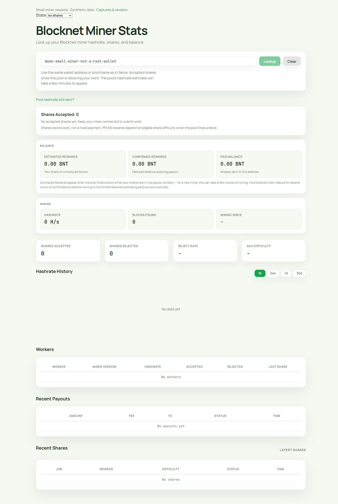
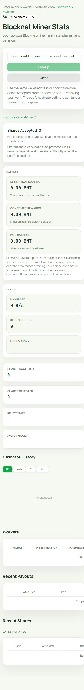
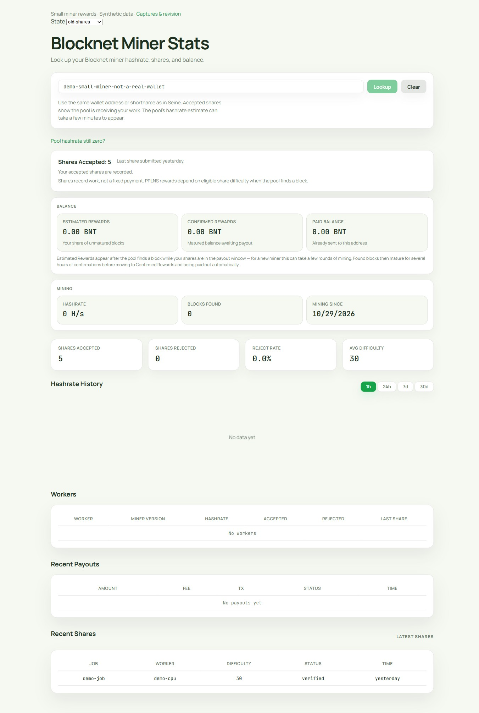
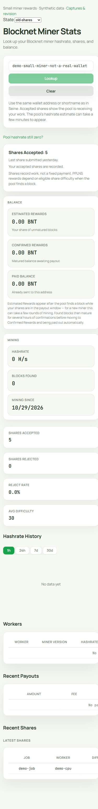
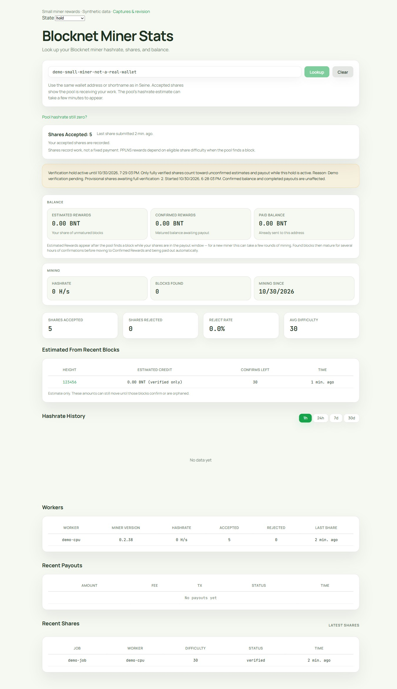
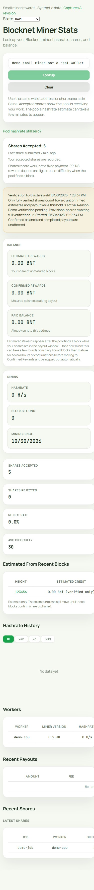
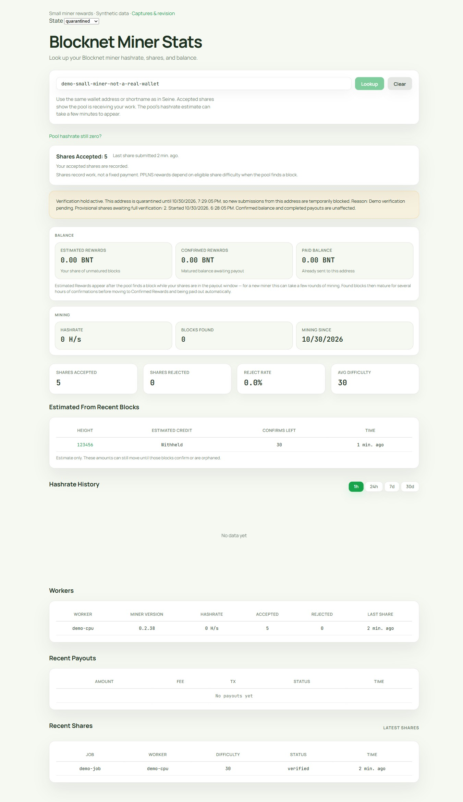
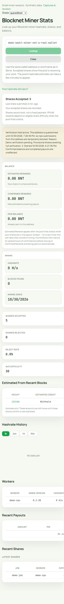
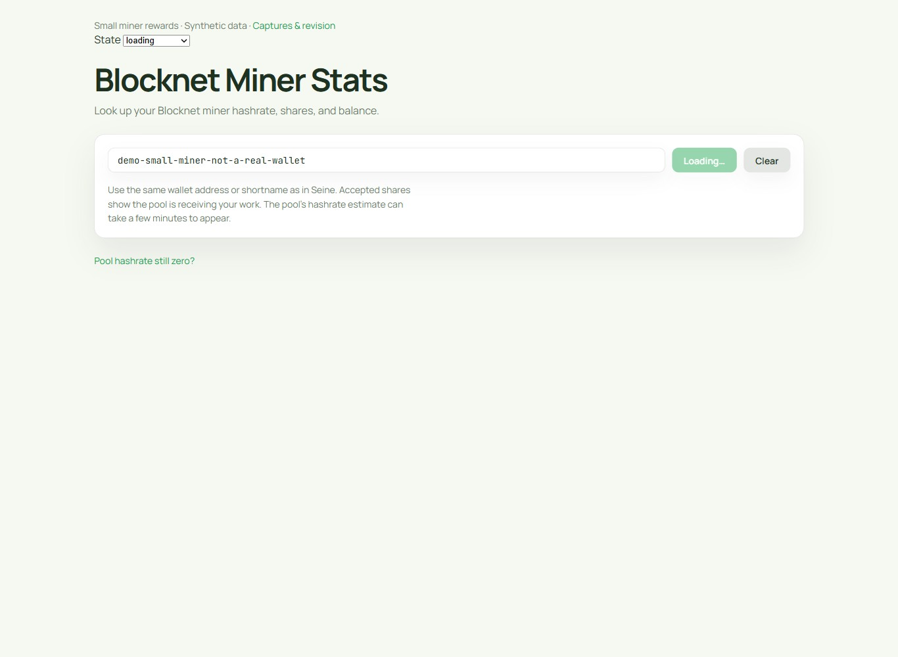
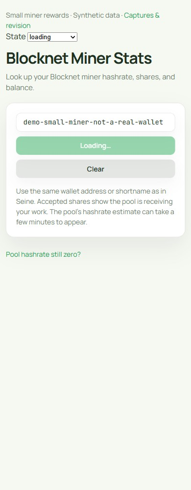
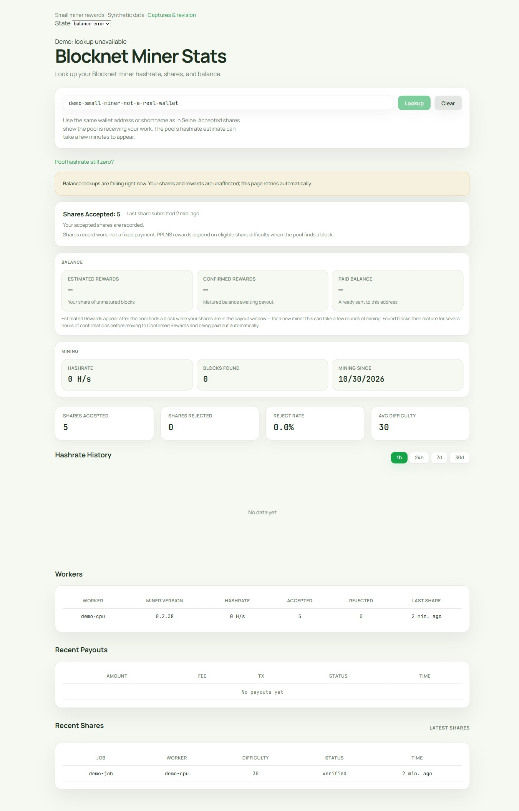
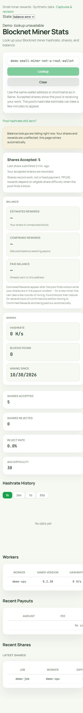
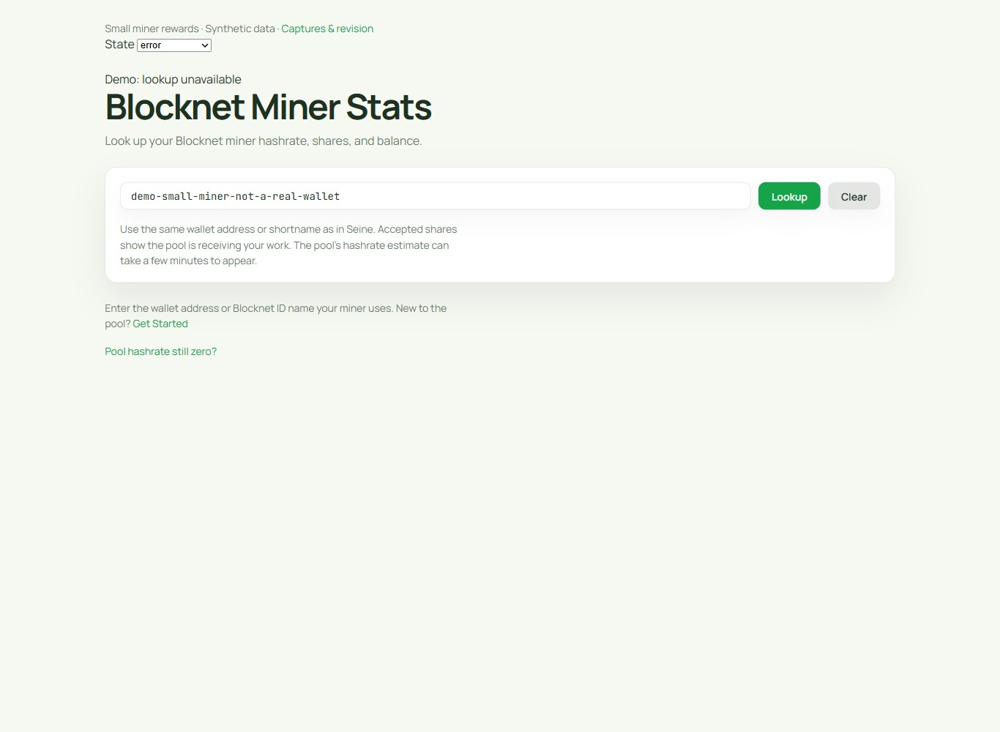
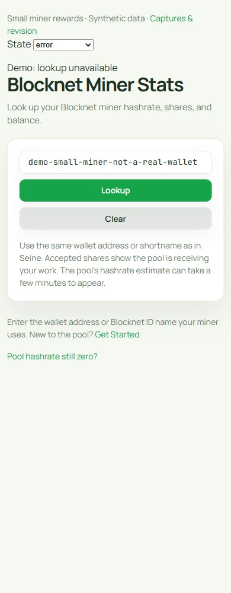
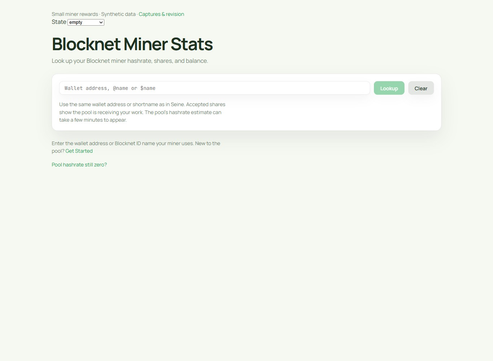
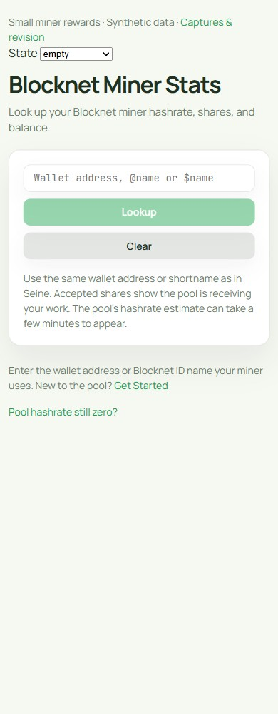
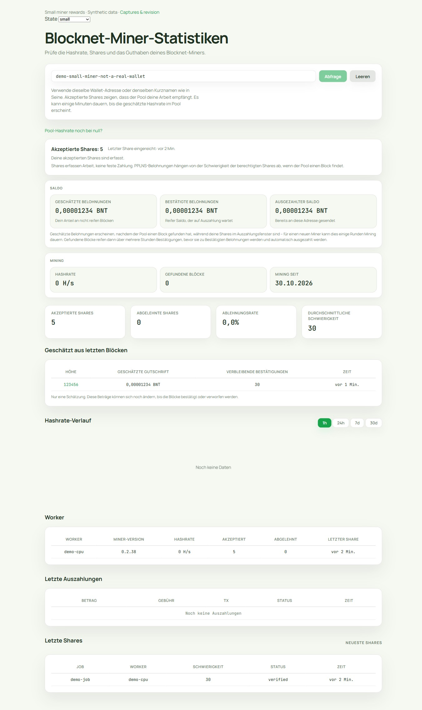
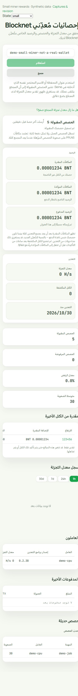
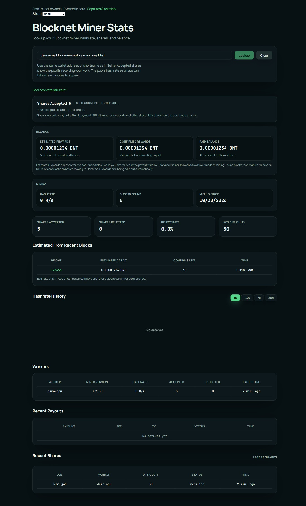
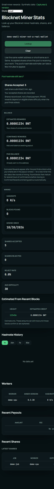